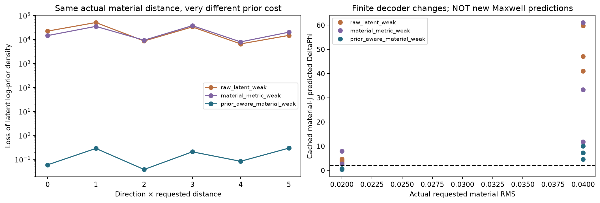
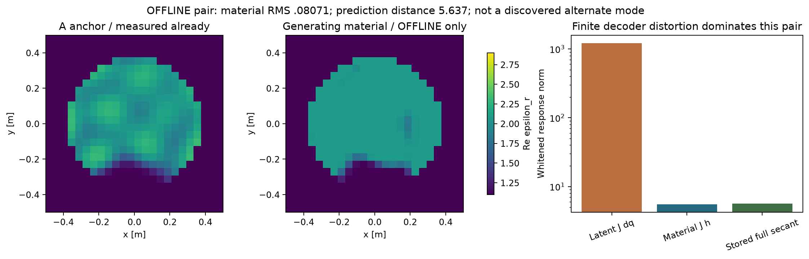
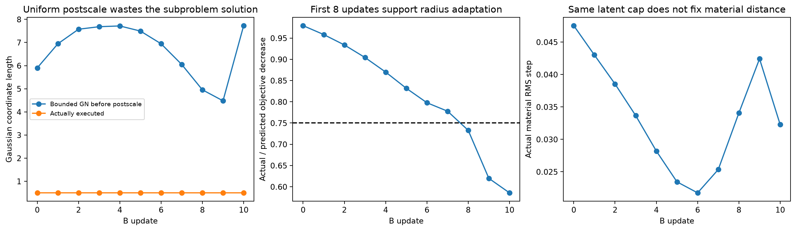

零新增物理：缓存分析图
所有有限decoder新材料均未full-Maxwell验证；离线GT不参与在线方向、优化或排名。
A：latent与真实材料尺度

材料归一化消除了大量坐标病态，但仍有非零弱方向；prior费用和boundary必须保留。
PDF有限decoder运动与latent prior代价

RMS .02/.04，固定三个方向/家族。预测DeltaPhi来自缓存完整材料J，绝不是新full-forward。
PDF隔离的A–GT材料与有限响应

双noise-ball通过并不等于统计不可分。GT仅离线，图中未展示新的已发现世界。
PDFB：原始GN步与统一缩短

建议adaptive TR仍是未验证算法改进，不以缓存模型预测冒充真实收敛。
PDF